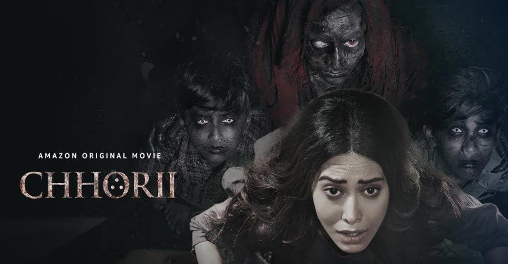
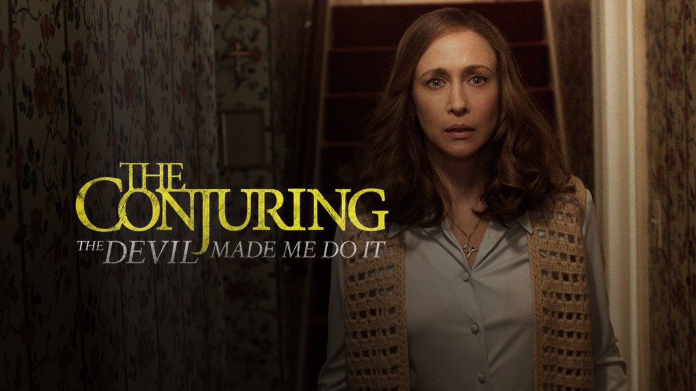
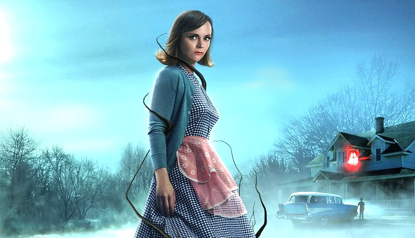
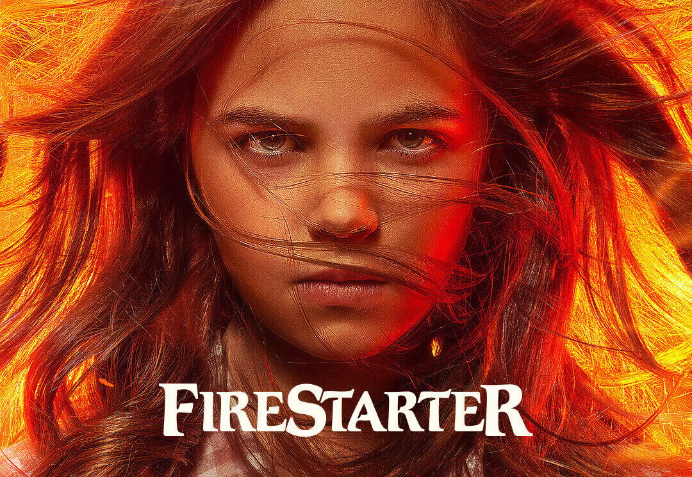

| Movies | Description |
|---|---|
|  |
CHHORII Hemant and Sakshi, a married couple, are forced to move out of their home seek refuge in a remote house. However, she soon experiences supernatural which threaten her life. Duration: 2h9m Released: November 26 2021 Cast: Pallavi Ajay, Jajesh Jais, Yaaneea PG-13 |
|  |
THE CONJURING Arne Cheyenne Johnson stabs and murders his landlord, claiming to be under demonic possession. Ed and Lorraine Warren investigate the case and try to prove his innocence. Duration: 1h52m Released: June 4 2021 Cast: Sarah Catherine, Julian Hilliard, Patrick Wilson VL 16 |
|  |
MONSTROUS A terrifying new horror awaits Laura and her 7-year-old son, Cody, when then they flee her abusive ex-husband and try to settle into a new life in an idyllic and remote lakeside farmhouse. Still traumatized, their physical and mental wellbeing are pushed to the limit as their fragile existence is threatened. Duration: 1h29m Released: March 12 2022 Cast: Christina Ricci, Santino Barnard, Colleen Camp PG |
|  |
FIRESTARTER A couple met while volunteering as guinea pigs for an experiment. The experiment is shrouded with suspicion. Later they marry, have a child who has strange abilities. Is this due to the experiment? Duration: 1h54m Released: January 25 1984 Cast: Stephen King, David Keith, Heather Locklear PG |